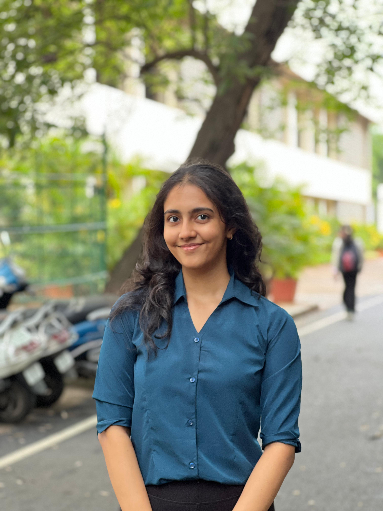

Sonali Rao

Summary:
I am a detail-oriented Medical Electronics Engineering student eager to learn and grow in a challenging environment within medical technology. Passionate about expanding my skill set through hands-on experience and collaborative learning, I enjoy networking with professionals to enhance my knowledge and contribute to the intersection of technology and healthcare.
Education:
- Medical Electronics Engineering
CGPA: 8.51
2021 - 2025
BMS COLLEGE OF ENGINEERING
- Pre-University : PCMC
Grade: 98%
2019 - 2021
Vidya mandir college
Work Experience:
- Biomedical Intern at People Tree Hospital
April 2024 - May 2024
- Hands-on Experience with Medical Devices
- Exposure to Hospital Departments
- Insights on Biomedical Instrumentation
- Developer Inten at Renalyx Healt pvt ltd
December 2024 - March 2025
- Rebuild the REACH app to ensure cross-platform compatibility, re-implementing key functions and redesigning UI components.
- Created high-fidelity screen designs using Canva and Figma for team review and guidance prior to coding.
- Conducted comprehensive testing and debugging of Flutter modules using Android Studio and VS Code to ensure app stability.
- Technology and Transformation intern at DELOITTE
January 2025 - June 2025
- Hands on training in wWeb Development and Cloud Management
- Built an Event Management system as a part of the Capstone Project
- Exposure to various AI Agents and trained in using them efficiently
- Gained insights into the operations of the company
Skills:
- Programming languages- c, c++, Python, Flutter: ★★★★
- LINUX and Windows O.S:★★★
- Medical Image Processing: ★★★
- Web Development: ★★★★
- AI & Machine Learning: ★★★
- No-Code Development - Bubble: ★★
- Networking Fundamentals: ★★
- Object Oriented Programming: ★★★
- Embedded Systems: ★★
Awards and Ceritifications:
- 2nd Prize – Project Exhibition 🥈
Awarded at the Project Exhibition organized by the Department of Medical Electronics Engineering, B.M.S. College of Engineering.
Project Title: “Deep Learning-Based Web Application for Early Detection of Melanoma Using Skin Lesion Images.”
- Certification – LAUNCH by Hardskills
Completed an interactive, corporate-readiness program focused on essential behavioural skills such as communication, prioritization, accountability, adaptability, teamwork, problem-solving, and initiative — preparing professionals to thrive in dynamic work environments.
Others: